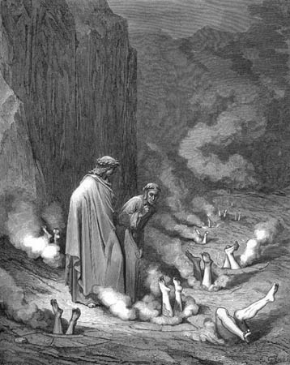

Canto XIXVala dos simoníacos
|
|  |
| Dante conversa com o papa Nicolau III que o confunde com o papa Bonifácio VIII, aguardado naquela parte do Inferno. Ilustração de Gustave Doré (séc XIX). |
- Ó tu, alma desgraçada que estás plantada, fala se puderes! - fui dizendo, enquanto me abaixava diante dele como um frade durante uma confissão.
- Já estás aí plantado? Já estás aí plantado, Bonifácio? Por muitos anos enganou-me o escrito! - falou a alma pensando que eu fosse outro. Fiquei imóvel sem saber como responder.
- Rápido, dize a ele que não és ele, que não és aquele que ele pensa que és - ordenou Virgílio, e eu respondi ao espírito da mesma forma como ele me pediu.
- Bem, então o que querem de mim? - perguntou, suspirando e torcendo os pés - Se querem saber quem eu sou, saibam que um dia fui papa, mas na verdade eu era filho da Ursa. Por tanto procurar embolsar ouro naquele mundo, aqui eu mesmo fui embolsado. Neste buraco, abaixo da minha cabeça, estão empilhados todos aqueles que me precederam, pecando por tráfico de coisas divinas, espremidos nas fissuras da pedra. Eu aguardo a chegada daquele que eu pensava que tu eras, que ocupará o lugar que hoje ocupo, me empurrando mais para baixo neste buraco. Os pés dele arderão em chamas até que ele seja também substituído por um pastor sem lei, que virá do ocidente, e que pelo rei da França será protegido. Ele cobrirá a Bonifácio e a mim.
Não resisti em respondê-lo com suas próprias palavras:
- Bem, dize-me quanto foi que Pedro teve que pagar ao nosso Senhor antes que Ele desse-lhe as chaves de sua Igreja? Estejas certo que ele pediu nada mais que "Me acompanha." Então fica tu aí pois essa tua punição é merecida. Tua avareza traz tristeza ao mundo, esmagando os justos, premiando os depravados. Criastes para vós, pastores pervertidos, um deus de ouro e prata! Pouca diferença há entre vós e os idólatras, exceto que eles só adoram a um, e vós adorais centenas!
E enquanto eu falava essas palavras, aqueles pés escoiceavam mais ainda, talvez por ira ou mordidas de consciência. O mestre então me levou de volta à ribanceira e seguimos para a quarta vala.